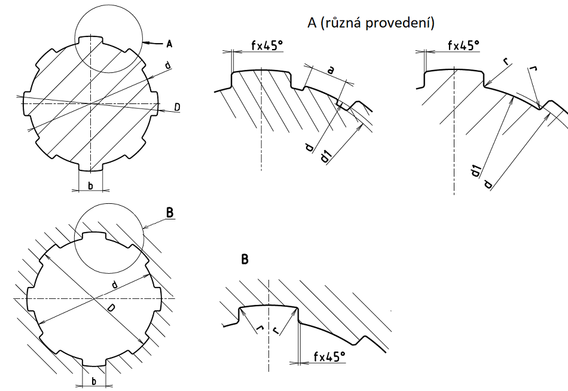

Rozměry v milimetrech
| Počet per (drážek) z |
Malý průměr d |
Velký průměr D |
Šířka pera (drážky) b |
Minimální průměr d1min |
Minimální šířka amin |
Zkosení nebo zaoblení | Poloměr zaoblení rmax |
Účinná plocha na 1 mm délky A' [mm2] |
|
|---|---|---|---|---|---|---|---|---|---|
| f | úchylky | ||||||||
| 10 | 16 | 20 | 2,5 | 14,1 | - | 0,3 | 0 +0,2 |
0,2 | 10,5 |
| 18 | 23 | 3,0 | 15,6 | - | 13,5 | ||||
| 21 | 26 | 3,0 | 18,5 | - | |||||
| 23 | 29 | 4,0 | 20,3 | - | 18,0 | ||||
| 26 | 32 | 4,0 | 23,0 | - | 0,4 | 0,3 | 16,5 | ||
| 28 | 35 | 4,0 | 24,4 | - | 20,2 | ||||
| 32 | 42 | 5,0 | 28,0 | - | 24,0 | ||||
| 36 | 45 | 5,0 | 31,3 | - | 27,8 | ||||
| 42 | 52 | 6,0 | 36,9 | - | 30,4 | ||||
| 46 | 56 | 7,0 | 40,9 | - | 0,5 | 0 +0,3 |
0,5 | 30,0 | |
| 16 | 52 | 60 | 5,0 | 47,0 | - | 36,0 | |||
| 56 | 65 | 5,0 | 50,6 | - | 42,0 | ||||
| 62 | 72 | 6,0 | 56,1 | - | 48,0 | ||||
| 72 | 82 | 7,0 | 65,9 | - | |||||
| 20 | 82 | 92 | 6,0 | 75,6 | - | 60,0 | |||
| 92 | 102 | 7,0 | 85,5 | - | 0 +0,4 |
||||
| 102 | 115 | 8,0 | 94,0 | - | 82,0 | ||||
| 112 | 125 | 9,0 | 104,0 | - | |||||